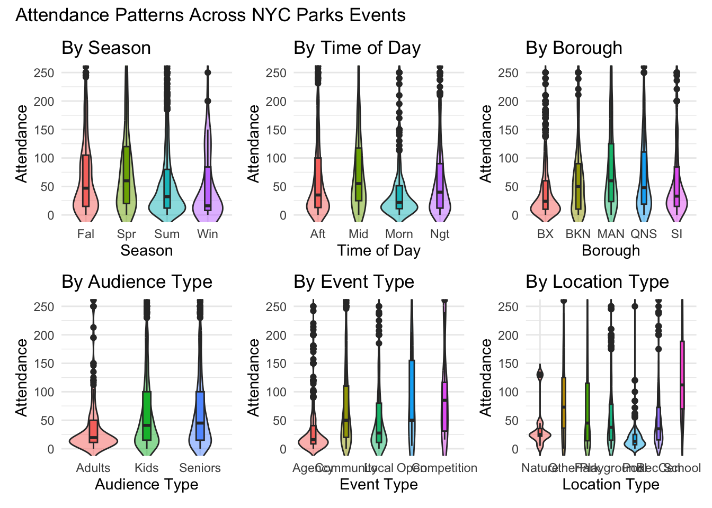
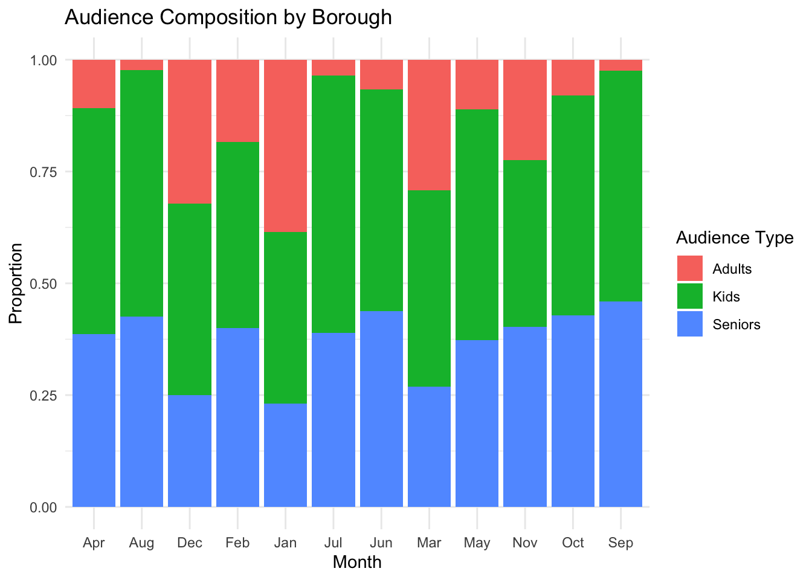

Descriptive Analysis
Descriptive Analysis
Table 1: Attendance summary by different variables
parkevent |>
summarize(
Mean = mean(attendance),
Median = median(attendance),
SD = sd(attendance),
Min = min(attendance),
Max= max(attendance)) |>
knitr::kable(caption = "Total Attendance Summary", digits = 2)| Mean | Median | SD | Min | Max |
|---|---|---|---|---|
| 74.44 | 39 | 100.95 | 0 | 861 |
Table 1 summarizes the distribution of attendance across all post-COVID events, including the mean, median, variability, and range of turnout. These descriptive statistics provide an essential baseline for understanding overall engagement levels and for comparing attendance across seasons, event types, boroughs, and time-of-day categories in subsequent analyses.
Table 2: Attendance summary by different variables
table_vars <- c("season", "time_period", "borough", "event_type","location_type")
describe_by_group <- function(var) {
parkevent |>
group_by(across(all_of(var))) |>
summarize(
Count= n(),
Mean= mean(attendance, na.rm = TRUE),
Median= median(attendance, na.rm = TRUE),
SD= sd(attendance, na.rm = TRUE),
Min = min(attendance, na.rm = TRUE),
Max = max(attendance, na.rm = TRUE),
Sum = sum(attendance, na.rm = TRUE),
.groups = "drop"
) |>
rename(Level = !!var) |>
mutate(Variable = var)
}
summary_all <- purrr::map_df(table_vars, describe_by_group)
summary_all <- summary_all |>
group_by(Variable) |>
mutate(variable_disp = if_else(row_number() == 1,
Variable,
"")) |>
ungroup()
knitr::kable(
summary_all |>
select(Variable = variable_disp, Level, Count, Mean, Median, SD, Min, Max,Sum),
digits = 2,
caption = "Attendance Summary by Subgroup"
)| Variable | Level | Count | Mean | Median | SD | Min | Max | Sum |
|---|---|---|---|---|---|---|---|---|
| season | Fall | 621 | 84.15 | 47.0 | 105.48 | 0 | 861 | 52258 |
| Spring | 280 | 98.29 | 60.0 | 120.07 | 0 | 800 | 27522 | |
| Summer | 1466 | 66.34 | 32.0 | 93.40 | 0 | 800 | 97259 | |
| Winter | 80 | 63.99 | 16.0 | 106.96 | 0 | 700 | 5119 | |
| time_period | Afternoon | 1070 | 79.83 | 35.0 | 114.24 | 0 | 861 | 85418 |
| Midnight | 411 | 80.92 | 55.0 | 79.83 | 0 | 500 | 33259 | |
| Morning | 236 | 47.80 | 22.0 | 74.54 | 0 | 550 | 11281 | |
| Night | 730 | 71.51 | 40.0 | 96.83 | 0 | 800 | 52200 | |
| borough | Bronx | 879 | 52.32 | 24.0 | 77.03 | 0 | 501 | 45993 |
| Brooklyn | 310 | 69.64 | 50.0 | 76.74 | 0 | 329 | 21588 | |
| Manhattan | 563 | 98.50 | 60.0 | 111.12 | 0 | 800 | 55457 | |
| Queens | 415 | 84.14 | 48.0 | 107.52 | 0 | 861 | 34917 | |
| Staten Island | 280 | 86.44 | 33.0 | 138.22 | 0 | 800 | 24203 | |
| event_type | Agency Produced Event | 563 | 49.39 | 16.0 | 105.01 | 0 | 861 | 27805 |
| Community Based Event | 1564 | 83.67 | 50.0 | 97.20 | 0 | 800 | 130858 | |
| Local Event | 300 | 71.62 | 27.5 | 104.93 | 0 | 556 | 21485 | |
| Open House | 9 | 104.44 | 50.0 | 111.17 | 5 | 345 | 940 | |
| Tournament/Competition | 11 | 97.27 | 85.0 | 84.25 | 16 | 261 | 1070 | |
| location_type | Nature Center | 7 | 39.29 | 25.0 | 41.68 | 5 | 130 | 275 |
| Other | 134 | 96.75 | 73.0 | 103.14 | 0 | 800 | 12964 | |
| Park | 1213 | 86.95 | 45.0 | 115.16 | 0 | 861 | 105465 | |
| Playground | 446 | 58.97 | 37.5 | 67.70 | 0 | 485 | 26300 | |
| Pool | 249 | 20.14 | 13.0 | 29.38 | 0 | 300 | 5016 | |
| Recreation Center | 315 | 61.35 | 35.0 | 78.18 | 0 | 550 | 19326 | |
| School | 83 | 154.36 | 112.0 | 138.28 | 5 | 715 | 12812 |
Table 2 shows attendance varied substantially across time, seasons, and event characteristics. Monthly patterns showed higher activity in late spring and summer, with April, June, and July hosting the largest number of events, while winter months had fewer but sometimes higher-variance attendance. Seasonal attendance was highest in Spring and Summer, reflecting NYC’s outdoor activity trends. Afternoon events had the largest counts, followed by Night, whereas Morning and Midnight events drew smaller groups. Attendance also differed across boroughs and event types, with parks and community events supporting the greatest participation. These subgroup summaries provide essential baseline context for downstream modeling.
Figure 1: Attendance Patterns Across NYC Parks Events
plot_season =
ggplot(parkevent, aes(x = season, y = attendance, fill=season)) +
geom_violin(trim = FALSE, alpha = 0.5) +
geom_boxplot(width=0.15) +
coord_cartesian(ylim = c(0,250)) +
scale_x_discrete(labels = c(
"Spring" = "Spr",
"Summer" = "Sum",
"Fall" = "Fal",
"Winter" = "Win")) +
labs(title = "By Season", x = "Season", y = "Attendance") +
guides(fill = "none") +
theme_minimal()
plot_time =
ggplot(parkevent, aes(x = time_period, y = attendance, fill=time_period)) +
geom_violin(trim = FALSE, alpha = 0.5) +
geom_boxplot(width=0.15) +
coord_cartesian(ylim = c(0,250)) +
scale_x_discrete(labels = c(
"Morning" = "Morn",
"Afternoon" = "Aft",
"Night" = "Ngt",
"Midnight" = "Mid")) +
labs(title = "By Time of Day", x = "Time of Day", y = "Attendance") +
guides(fill = "none") +
theme_minimal()
plot_type =
ggplot(parkevent, aes(x = event_type, y = attendance, fill = event_type)) +
geom_violin(trim = FALSE, alpha = 0.5) +
geom_boxplot(width = 0.15) +
coord_cartesian(ylim = c(0,250)) +
scale_x_discrete(labels = c(
"Agency Produced Event" = "Agency",
"Community Based Event" = "Community",
"Local Event" = "Local",
"Open House" = "Open",
"Tournament/Competition" = "Competition")) +
guides(fill = "none") +
labs(
title = "By Event Type",
x = "Event Type",
y = "Attendance") +
theme_minimal()
plot_borough =
ggplot(parkevent, aes(x = borough, y = attendance, fill=borough)) +
geom_violin(trim = FALSE, alpha = 0.5) +
geom_boxplot(width=0.15) +
coord_cartesian(ylim = c(0,250)) +
scale_x_discrete(labels = c(
"Bronx" = "BX",
"Brooklyn" = "BKN",
"Manhattan" = "MAN",
"Queens" = "QNS",
"Staten Island"= "SI")) +
labs(title = "By Borough", x = "Borough", y = "Attendance") +
guides(fill = "none") +
theme_minimal()
plot_location =
ggplot(parkevent, aes(x = location_type, y = attendance, fill = location_type)) +
geom_violin(trim = FALSE, alpha = 0.5) +
geom_boxplot(width = 0.15) +
coord_cartesian(ylim = c(0,250)) +
scale_x_discrete(labels = c(
"Nature Center" = "Nature",
"Recreation Center" = "RecCen",
"Playground" = "Playground",
"Pool" = "Pool",
"Park" = "Park",
"Other" = "Other",
"School" = "School")) +
labs(
title = "By Location Type",
x = "Location Type",
y = "Attendance") +
guides(fill = "none") +
theme_minimal()
parkevent_long <- parkevent |>
pivot_longer(
cols = c(kids_friendly, senior_friendly, adults_only),
names_to = "audience_type",
values_to = "flag"
) |>
filter(flag) |>
select(-flag) |>
mutate(
audience_type = recode(
audience_type,
kids_friendly = "Kids",
senior_friendly = "Seniors",
adults_only = "Adults"))
plot_audience =
ggplot(parkevent_long,
aes(x = audience_type, y = attendance, fill = audience_type)) +
geom_violin(trim = FALSE, alpha = 0.5) +
geom_boxplot(width = 0.15) +
coord_cartesian(ylim = c(0, 250)) +
labs(
title = "By Audience Type",
x = "Audience Type",
y = "Attendance") +
guides(fill = "none") +
theme_minimal()
patterns_plot =
((plot_season |plot_time| plot_borough) /
(plot_audience|plot_type| plot_location))+
plot_annotation(
title = "Attendance Patterns Across NYC Parks Events",
theme = theme())
patterns_plot Figure1 displays violin–boxplots of attendance by season, time of day, borough, event type, aduience type and location type. These plots summarize both the distribution (violin shape) and central tendency (box plot) for each category, allowing visual comparison of how attendance varies across park events. We restricted the y-axis to 0–250 attendees because most events fall within this range, while a small number of very large events have much higher attendance. Without this limit, those extreme values compress the main body of the data and make differences between typical events difficult to see.
Figure 2: Audience Composition by Borough
ggplot(parkevent_long,
aes(x = month, fill = audience_type)) +
geom_bar(position = "fill") +
labs(
title = "Audience Composition by Borough",
x = "Month",
y = "Proportion",
fill = "Audience Type"
) +
theme_minimal()
Figure 2 shows how audience composition varies across months for NYC park events. Kids-friendly events consistently represent the largest share throughout the year, especially from April to October, indicating strong family engagement during warmer months. Senior-friendly events also maintain a substantial and steady presence, peaking in early spring and again in late summer. Adults-only events fluctuate more noticeably, with higher proportions in winter months such as January and December. Overall, the chart highlights seasonal shifts in audience needs: family-oriented programming dominates most of the year, while adult-focused events become relatively more common during colder months.
Figure 3: Intercation Figures
plot_time_season =
parkevent |>
group_by(time_period, season) |>
summarize(mean_attendance = mean(attendance)) |>
ggplot(aes(x = time_period,
y = mean_attendance,
color = season,
group = season)) +
geom_line() +
geom_point() +
labs(
title = "3A: Mean Attendance by Time of Day Across Seasons",
x = "Time of Day",
y = "Mean Attendance",
color = "Season") +
theme_minimal()
plot_borough_season =
parkevent |>
group_by(borough, season) |>
summarize(mean_attendance = mean(attendance)) |>
ggplot(aes(x = season,
y = mean_attendance,
color = borough,
group = borough)) +
geom_line() +
geom_point() +
scale_color_brewer(palette = "Dark2") +
labs(
title = "3B:Mean Attendance by Seasons Across Borough",
x = "Season",
y = "Mean Attendance",
color = "borough") +
theme_minimal()
Seasonal_plot =
(plot_time_season / plot_borough_season) +
plot_annotation(
title = "Seasonal Attendance Patterns Across NYC Park Events")
Seasonal_plot
Figure 3A shows how mean attendance varies by time of day across
seasons. Spring consistently has the highest turnout, especially in the
afternoon, while Winter shows the sharpest decline at midnight. Fall
attendance remains relatively stable across all times, whereas Summer
gradually increases into the evening.
Figure 3B compares mean attendance by seasons across borough. Staten
Island and Queens show the highest seasonal peaks, particularly in
Spring. Brooklyn and Manhattan maintain moderate attendance across
seasons, while the Bronx shows the lowest and least variable averages.
Together, these trends highlight clear seasonal and geographic
differences in NYC park event engagement.
Figure 4: Attendance Over the Calendar Year
plot_calendar =
ggplot(parkevent,
aes(x = month(date, label = TRUE, abbr = TRUE),
y = attendance)) +
geom_point(alpha = 0.2, color = "gray70") +
stat_summary(fun = mean, geom = "line", aes(group = 1),
color = "cornflowerblue", size = 1) +
stat_summary(fun = mean, geom = "point",
color = "cornflowerblue", size = 2) +
labs(
title = "Attendance Over the Calendar Year",
x = "Month",
y = "Attendance") +
coord_cartesian(ylim = c(0, 250)) +
theme_minimal()
plot_calendar
Figure 4 shows how park event attendance varies throughout the calendar year by combining individual event points with a smoothed monthly trend line. Grey points display the full distribution of attendance for all events, allowing visualization of variability within each month. Monthly averages are overlaid as a blue line to highlight broader seasonal patterns that daily fluctuations may obscure. The results show a dip in February, rising attendance during spring, a slight decline in midsummer, and another increase in October and December. Using monthly means helps reveal consistent seasonal trends while still preserving the underlying data distribution for context and interpretation.